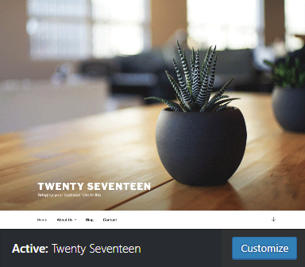
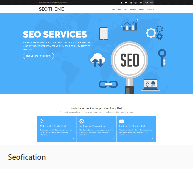
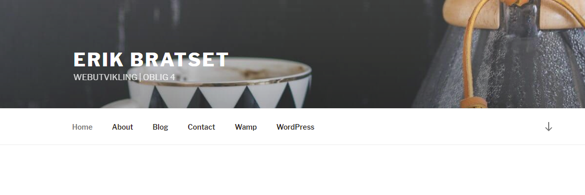
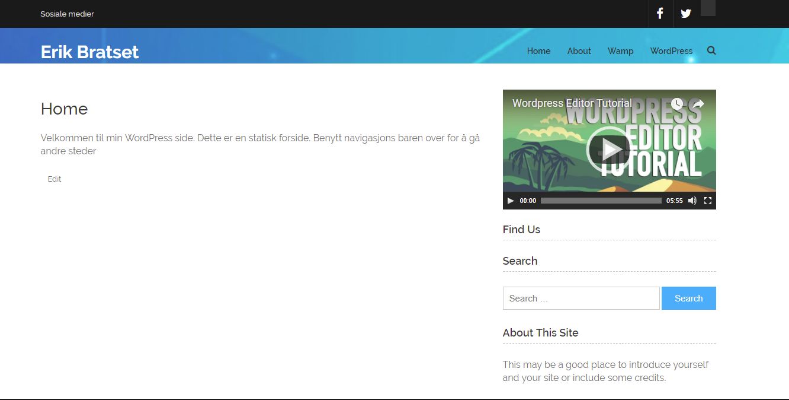
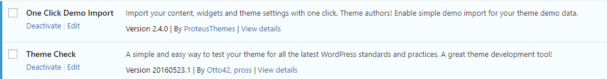
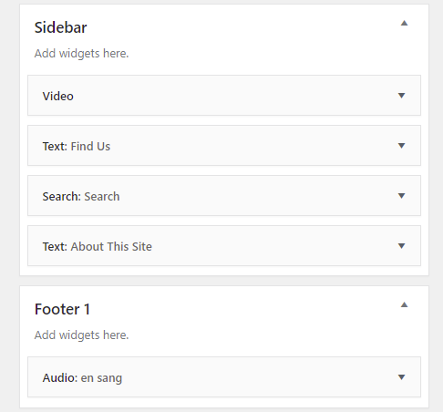
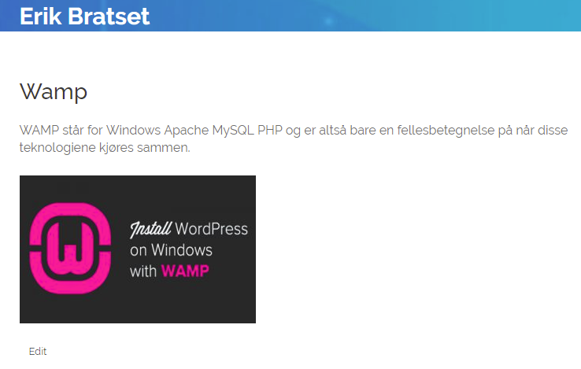
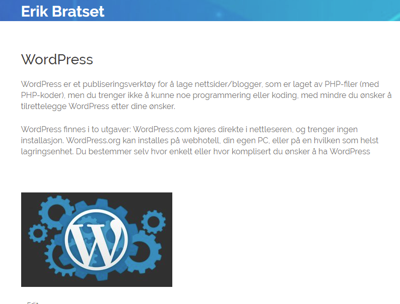
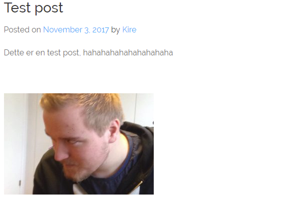
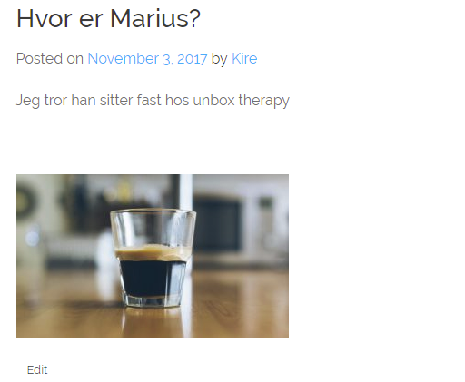

Hva er Wordpress tilbehør?
Wordspress tilbur en rekke av ekstra tilbehør for utvikling av siden din. De tilbyr ferdig lagde temaer som kan redigeres. Plugins for forskjellige grunner og widgets. Under kan du se hva jeg valgte i oppgaven min
Wordpress tema
I oppgaven skulle jeg teste ut 2 temaer i wordpress. Her er de jeg valgte  Det første temaet jeg prøvde var Twenty Seventeen. Dette var et veldig simpelt tema med lite tilpasninger. Jeg kunne legge til sider som vist under og endre bildene. Ga nettsiden et simpelt design som jeg likte veldig godt 
Det andre temaet jeg prøvde var Seofication. Dette var en helt syk redigerbar side med uendelige muligheter. Her har jeg endret header, lagt til sosiale medier, endret frontpage og lagt til en sidebar med wordpress video.

Jeg føler at Seofication var det beste alternativet. Dette temaet ga med uendelige muligheter for redigering og ga meg en veldig god opplevelse med redigering
Wordpress plugins
Jeg valgte 2 plugins for wordpress siden min One click demo import og theme check Disse "pluginsene" var på toplisten over plugins. Begge gjør wordpress litt lettere å fungerer veldig bra.
Wordpress widgets
Jeg valgte en audio og en video vidget for nettsiden min. Jeg brukte video widgeten i sidebar og audio i footer Wordpress posts og pages
Jeg lagde en page om Wordpress og en page om Wamp. Ja la til litt tekst og bilde på begge pagene  Jeg lagde 2 posts om helt random ting, ikke bry deg om innholdet  